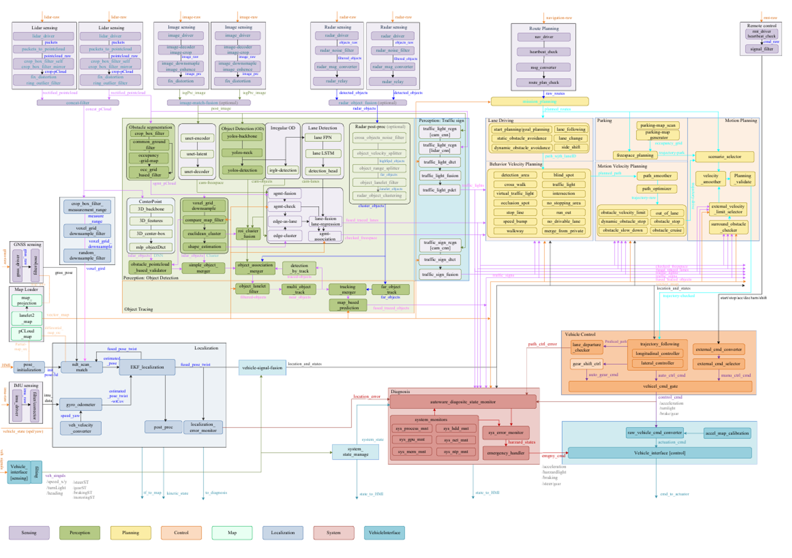
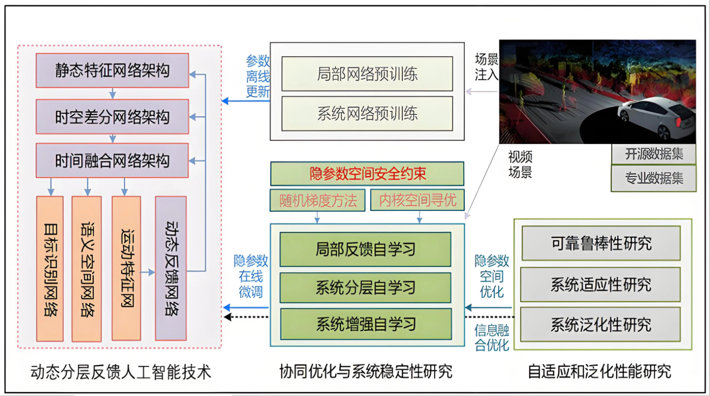
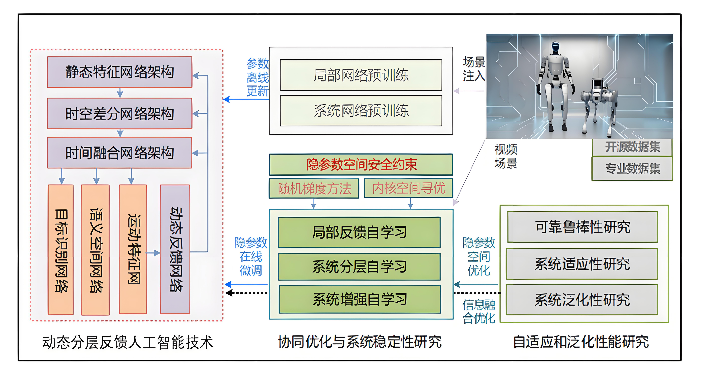
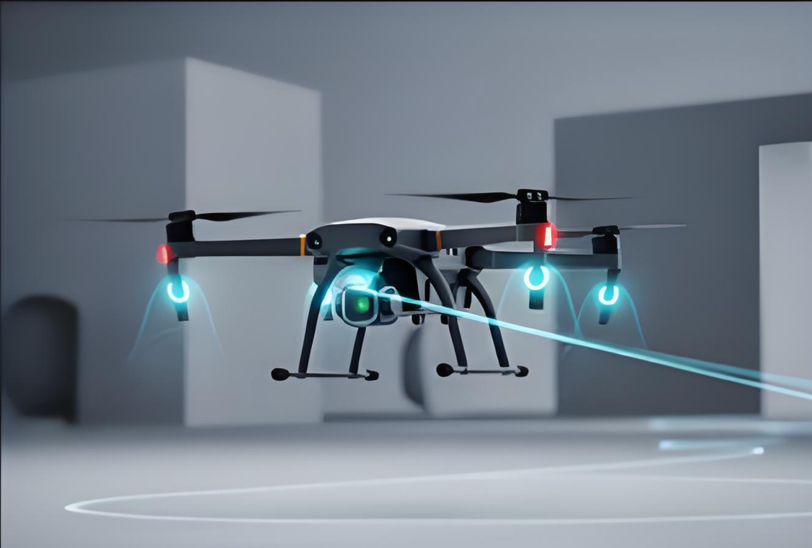

研究方向
1. 汽车智能驾驶
围绕环境感知、决策规划以及路径优化、行为预测、端到端自动驾驶学习和多传感器融合安全决策等核心问题展开研究，面向自动驾驶全栈系统构建安全可控的智能驾驶技术体系。

2. 汽车人工智能
围绕智能底盘、智能控制以及差分网络、偏分网络、分层反馈自主学习和智能安全反馈网络等核心问题展开研究，面向智能汽车核心系统构建可靠可信的人工智能方法体系。

3. 智能机器人系统研发与应用
聚焦多场景自主导航与柔性操作控制，包括工业环境、非结构化环境中的定位与导航，以及视觉伺服、力觉控制等关键能力，推动机器人系统在复杂场景中的智能化落地。

4. 智能机器狗技术研究
面向复杂地形环境开展仿生敏捷控制、自主避障和多模态环境感知研究，重点提升机器狗在非结构化场景中的运动稳定性、感知精度和任务执行能力。
5. 智能无人机集群与自主控制
围绕空地协同调度、集群协同作业、视觉 SLAM 与三维建模等方向展开研究，支撑无人机系统在感知、规划与协同任务中的群体智能应用。
